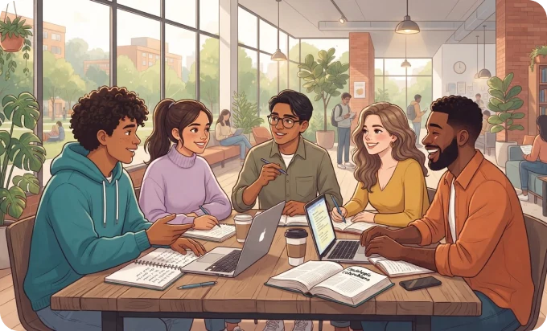

Entiende lo que sientes
Reconoce hábitos y situaciones de tu vida universitaria.
Estudiar también es cuidarse
Reconoce cómo te sientes, encuentra recursos y da pequeños pasos para cuidarte.

Reconoce hábitos y situaciones de tu vida universitaria.
Explora herramientas, guías y contenidos prácticos.
Respira, desconéctate un momento y recupera energía.
Situaciones reales, emociones reales
La vida universitaria puede ser retadora. Aquí encontrarás apoyo para situaciones que hacen parte de tu día a día.
Herramientas para tu día a día
Estrategias simples para priorizar y sentir más control.
OrganizaciónIdeas para recuperar energía y mejorar tu bienestar.
AutocuidadoRecomendaciones para afrontar momentos exigentes.
Bienestar académicoResponde algunas preguntas y recibe un resumen descriptivo.
Explora ejercicios breves de respiración y atención.
Aquí encontrarás opciones y canales oficiales.